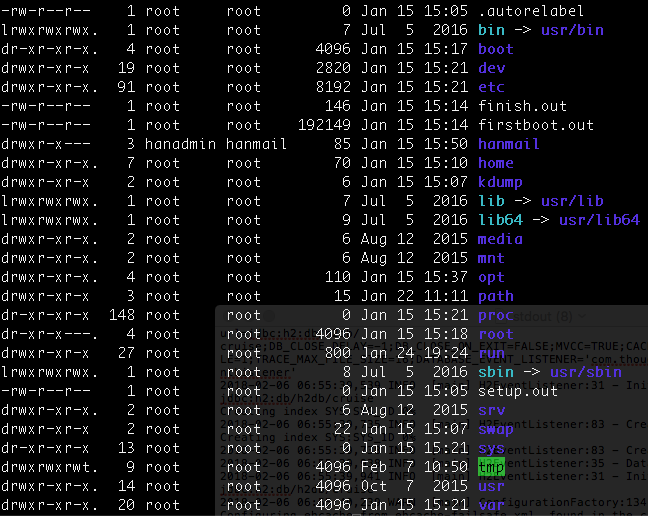

CentOs 7 리눅스 기본 1
리눅스 서버를 통해 서버개발자로서의 기초를 다져봅시다
리눅스의 시스템에서 Root의 개념
root라고 이야기하면 root사용자 계정과 root디렉토리중 하나를 의미합니다.
리눅스 시스템을 사용하기 위해 사용자 계정이 필요한데, 이러한 사용자 계정은 시스템 관리를 위한
관리자 계정 (Super User:: sudo의 su가 이것임)과 일반 사용자 계정으로 나눌 수 있습니다.
리눅스 파일체제의 최상위 디렉토리를 루트라고 한다. 따라서 이것은 리눅스의 모든 디렉토리들의 시작점이다.
즉, 모든 디렉토리들을 절대 경로로 표기할 때에 이 디렉토리로부터 시작한다.
디렉토리 구조
리눅스는 앞에서 설명한 루트(/) 디렉토리를 시작으로 여러 파일들과 디렉토리로 구성되어있다.
FHS(FileSystem Hierarchy Standard)을 따라 표준화되어가고있다.
디렉토리의 종류와 특징
|
|
다음은 centos7의 루트 디렉토리(/)에서 명령어 ls -Al을 친 모습
